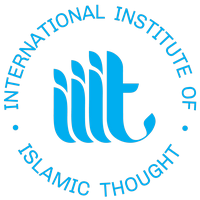
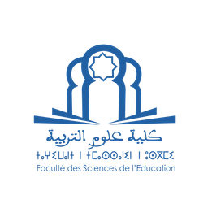

.png)
The symposium draws
proposals
by researchers from across fields and
disciplines (e.g., education, human development, history, political
science, public affairs, religious studies, gender studies, and sociology) in formal and
non-formal as well as governmental and non-governmental sectors.
Symposium Themes:
Rabat, Morocco*
Tuesday, November 28, 9:00 am
Wednesday, November 29, 9:00 am
Thursday, November 30, 8:30 am
*All timings in the program are as per local time .
For further information please do not hesitate to contact : aemsresearch@iiit.org
Dr. Karima Salah-Eddine, Muhammad V University, Morocco
Keynote: “Women’s Engagement in Scholarship, Policy, Pedagogy, Development, and Protest: A Perspective” 9:30-10:30 am
Dr. Laila Kadiwal, University College London, United Kingdom
Keynote : “Empowering Women through Early Literacy Intervention in Rural Areas: Insights from My Experience as a Monitoring and Evaluation Specialist in USDOL-Funded Projects” 10:30-11:30 am
In my presentation, I will shed light on the important role literacy plays in empowering women, with a special emphasis on implementing early intervention strategies in rural regions where we have high illiteracy rates and high rates of girls dropping out of school. Drawing upon my own experience as a Monitoring and Evaluation Specialist involved in two USDOL-funded projects Adros and Dima Adros; I'll share insights into how literacy can be a game-changer for women and why addressing educational disparities is so urgent.
The pressing need
to empower women in today’s globalized society is underscored in
the United Nations
Sustainable Development Goal Target 4.7, in which gender
equality is juxtaposed with the goal of fostering global
citizenship education. In the Algerian context, history
witnessed the vigorous contribution of women in military
and social activism. In the current time, women’s role
as Murabi
in the private sphere extends to include their
active role in the public sphere. Despite this fact, the
mainstream discourse, both the national and the global,
categorizes them as a 'subaltern’ (Spivak, 1988). The
absence of
research on women’s experiences attributed to
scarcity of resources along with the treatment of the topic as
“taboo” in the region restricted opportunities for
researching this important category of society. To
fill this
research gap, we use a critical lens that places Maghrebi
women’s experiences in historical context. Therefore, drawing
from Assia Djebar’s and Fatima Mernissi’s
scholarship, we offer a new perspective that contests the
top-down hegemonic representations of women to
suggest a more inclusive bottom-up narrative.
We argue that by combining the disciplines of education,
sociology, and literary studies, it is possible to develop a
framework for understanding Maghrebi women’s experiences.
Fatima
Mernissi’s sociological contributions grapple
not only with the religious and cultural discourses that have
been utilized as justification for women’s exclusion
both from educational settings and from broader historical
understanding.
At the same time, she emphasizes through her fieldwork that
Maghrebi women view education as a liberatory
pathway.
We argue as well that Djebar’s narratives of education,
especially those in L’Amour, la Fantasia (1985), and Le blanc
de l’Algérie (1995), and Nulle part dans la maison de mon père
(2007) articulate a more expansive definition of
political and cultural engagement for women.
Both L’Amour and Nulle part attend to Djebar’s education, both
in the French colonial system and through Quranic
schools. In these texts, as well as Le blanc de
l’Algérie, we
find a vision for women’s education that surpasses
colonial and nationalist discourses. Indeed, Djebar
describes
her intellectual formation as a doubled site of exile
and emancipation. At the same time that she finds
herself
severed from an ultranationalist homeland, she situates
herself such that she can reflect upon the historical and
present struggles of Algerian women – including those
who did not receive a similar kind of education.
We also find an essential role for what Djebar calls Algérianité
(Algerianity), which understands Algerian
experience as interconnected – between cultures, faith systems,
and languages (Amazigh, Arabic, French, and
Djebar’s view of the body as language).
In all cases, Algerian women are upheld as agents for change,
particularly at the cultural and educational level.
Combined with our analysis of global citizenship, we believe
that this research can provide a key historical and
cultural insight – one that opens up the potential for the
“undoing and redoing” (Mignolo and Walsh, 2008)
necessary to confront oppressive discourses of modernity and
nationalism towards a more equitable educational
framework that fosters females’ empowerment in the Maghreb.
Alexa Barger is a fourth year Ph.D. student in the Department of European Languages and Transcultural Studies at the University of California, Los Angeles. She specializes in contemporary French-language literatures of migration, particularly from the Francophone Caribbean and the African diaspora, and with a particular interest in the intersecting functions of class, racialization, and gender. Her dissertation, currently titled Blackness at Work: Relating Race, Gender, Class, and Nation, examines models of community and coalition-building in 20th and 21st century novels and films by Black Francophone artists.
Fadhila Hadjerisis a Ph.D. candidate majoring in Social Sciences and Comparative Education at the School of Education at UCLA. Prior to undertaking her graduate studies at UCLA, she successfully completed a Fulbright Scholarship at Wellesley College. Fadhila served as a Teaching Assistant and Teaching Fellow at the UCLA Department of Linguistics, the Department of European Languages and Transcultural Studies as well as the Department of Education. Fadhila’s research interests center on the implementation of Global Citizenship Education in the Algerian/Maghrebi context with a focus on the school curriculum and teachers’ pedagogy using Race and post-colonial feminist theories.
This paper
investigates the feasibility and effectiveness of conducting
Scriptural Reasoning (SR), through online
video conferencing, aiming to empower women in their religious
studies and foster a greater appreciation for
religious diversity. The study examines a two-year online SR
program involving students from Al-Azhar University in
Egypt and the United Kingdom, with a focus on female
participants.
The program was developed in response to challenges faced by
Egyptian students, including limited opportunities
for intercultural exchanges and in-country interfaith dialogue,
especially for women outside Cairo or from
disadvantaged backgrounds. Additionally, interfaith dialogue
between local populations in the region can be
challenging to organize and facilitate.
For example, interfaith gathering between Muslims and Coptic
Christians is hard to facilitate because of a variety
of factors. Furthermore, the restriction of teachings about
other Abrahamic religions to an Islamic perspective
leaves students underprepared to engage with those who hold
different perspectives. The paper evaluates the
benefits and limitations of this online SR model as experienced
by the participating women based on their answers
to periodic surveys on their experiences with scriptural
reasoning and interfaith dialogue more generally which
occurred over the course of the programme.
It discusses how limitations were addressed through feedback and
program adjustments. Benefits of the program
include reducing barriers to entry for cultural exchange,
providing opportunities for extended interaction and
dialogue, allowing participants to engage with others outside
their local context, and creating leadership
opportunities for female participants. However, limitations
include the potential for intercultural
misunderstandings due to a lack of shared context, difficulties
in forming trusting relationships through virtual
channels, and challenges related to the functionality of ICT
software.
Through this case study, the paper contributes to the
understanding of the efficacy and potential of online SR
programs for interfaith dialogue and education. The findings
shed light on the experiences of female participants
and highlight the opportunities and challenges associated with
this mode of engagement. The study also
emphasizes the importance of adapting traditional in-person SR
approaches to better accommodate the needs and
circumstances of diverse participants (women) in different
geographic and social contexts.
This article
examines the significance, difficulties, and
advancements of Islamic education for women in the contemporary
era. This study investigates the evolving perspectives on
women's education within Islamic principles and the efforts made
to improve women's access to education in modern Muslim
societies.
Beginning with the historical context of female
education in Islam, the research emphasizes the early
recognition of women's right to pursue knowledge. The section
then shifts to the present, where it discusses the changing
dynamics of women's education and the factors that influence
their educational opportunities.
The study tackles the
cultural, societal, and structural influences in order to
comprehend the contemporary complexity of female Islamic
education. The article examines the various approaches adopted
in various regions to facilitate Islamic education for women.
It examines the roles of traditional religious schools, contemporary educational institutions, and online platforms in facilitating women's engagement with Islamic studies. In addition, the incorporation of contemporary subjects into Islamic curricula is investigated, demonstrating the importance of science, technology, and social sciences in women's education.
This article concludes with a thorough examination of Islamic education for women in the modern era. Moreover, the article emphasizes the significance of empowering women through education within an Islamic context by analyzing historical foundations, contemporary developments, and ongoing efforts.
I take the case study method for the research; I compare some new Islamic institutions in Egypt and the Middle East such as the Institution of Ilim and A’mal and other online Islamic courses that started to attract many Muslim youth, especially females. For data analysis, I use qualitative comparative analysis and comparative analysis.
I argue that the decline of traditional methods of accessing Islamic sciences has paved the way for the emergence of new institutions, thereby motivating a significant number of females to actively seek and participate in these programs.
I employ two theories to examine the impact of the technological revolution on women seeking Islamic knowledge. Firstly, the Theory of Pedagogy of Empowerment underscores educational strategies that empower marginalized individuals, fostering critical thinking, self-assurance, and agency. It investigates pedagogical strategies and curriculum frameworks within Islamic education that enable women to challenge social norms, develop leadership skills, and actively participate in society.
This study enhances our understanding of how technology influences women's empowerment in accessing Islamic knowledge. Secondly, the connectivism theory highlights the role of online networks, social media platforms, and digital resources in facilitating distributed and interconnected learning environments. By leveraging these tools, connectivism enables students to engage with scholars, mentors, and peers, fostering meaningful connections and enhancing their pursuit of Islamic knowledge.
The case study presented in this paper showcases the application of connectivism in an Islamic educational context. This study contributes to our understanding of how the technological revolution impacts young individuals seeking Islamic knowledge, particularly in terms of networked learning and knowledge acquisition.
Esra Ahmed Abdulhalim Mustafa holds a Master of Arts in Islamic Studies from the Indonesian International Islamic University, 2023, and a Bachelor of Arts in Psychology from Helwan University in Egypt. Ms. Mustafa’s extensive professional background includes significant roles as a psychologist at the Egyptian Red Crescent. Moreover, she is skilled in Quran instruction for children. She has been recognized for her contributions to the field, having been selected for the Best Papers Competition by the Journal of Digital Muslim Review. Her forthcoming article is scheduled for publication in November 2023, further highlighting her scholarly accomplishments.
In contradistinction to the plethora of studies focusing on Islam and violence, a limited amount of research is attentive to Muslim peacebuilding. Hardly any engage women who espouse an Islamic theology of nonviolence.
This case study fills an epistemological lacuna. It critically examines the theory and praxis of Rabia Terri Harris, founder of the Muslim Peace Fellowship (MPF) located in the United States of America.
Harris embodies a distinctly Islamic approach to nonviolence that asserts the critical importance of individual spiritual refinement as a sound platform for engaging in struggles for social justice.
By highlighting the work spearheaded by Harris and the MPF, this essay seeks to correct the erroneous images of either a violent or passive Islam that currently pervade conventional wisdom. This study demonstrates that Islamic religious theology can provide a sound basis for a credible nonviolent jihad for a just peace. Furthermore, it suggests that an “Engaged Sufism” lends itself more readily than other Islamic theological orientations to nonviolence and peacebuilding.
A. Rashied Omar is an Associate Teaching Professor and Research Scholar of Islamic Studies and Peacebuilding at the University of Notre Dame in the U.S. He holds a doctorate in Religious Studies from the University of Cape Town, and is the author of “Islam Beyond Violent Extremism” published by Afrika Impressions Media, based in Durban, South Africa, in 2017.
The role that women from different parts of the world played in the development of their civilizations is often dimly investigated. Research on the area is almost barren especially in the MENA region. Yet, the notion of knowledge has a close attachment to female Muslim scholars. In fact, one cannot talk about knowledge, the transmission of knowledge and the history of ideas without relating it to higher education establishments. Until Fatima al-Fihriya established Jamia Qarawiyyin, the first institution for higher education back in 895 CE in the ancient city of Fes, the concept of higher education was not introduced into the world.
The idea then spread all over the Arab-Muslim world and it took hundreds of years for this new establishment to be imported into Europe. Tribute to women such as hers has been to some extent neglected. Thus, this study aims at shedding light upon the contributions of female Muslim scholars who have contributed greatly to the development of Western knowledge. The reasons for carrying out this research come from the fact that female Muslim scholars’ contribution to the intellectual history is rarely acknowledged within the context of higher education in the MENA Region and within the Moroccan universities.
Thus, this study uses a narrative literature review methodology to thoroughly study texts that highlight the female Muslim scholars’ main contributions to the world knowledge and how this knowledge found its way to the West.
The major procedures of the data collection and analysis involve the screening, synthesizing, and analyzing of a number of texts – books and articles mainly, written in both Arabic and English languages. Each article/book used in the study tackles a particular domain(s) in which female Muslim scholars were active, and each text presents a female Muslim scholar by name alongside her contributions. The data then is used to offer a coherent narrative that sheds light upon major female Muslim scholars with their main contributions to the world knowledge. This study, through the use of narrative literature review, offers a comprehensive overview of the influence that female Muslim scholars had on the development of the world knowledge in general and Western knowledge in particular.
The preliminary findings indicate the existence of a significant number of female Muslim scholars whose works were widely read in the Arab-Muslim society.
Amongst these names there are Fatima Al-Majritiya and Mariam Al-Ijliya (experts in astronomy), Labana of Cordoba (an expert in mathematics), and Fatima al-Fihriya who, in addition to her establishing the first university in the world, was an expert in astronomy, theology, law, rhetoric, prose, and verse writing. It was also found that notable intellectual interactions took place between the Global South and the Global North that were largely due to the translation movements, which might have aided in the transmission of this vast knowledge. The implementations of this study involve the need for more coverage of what female Muslim scholars have given to the world within the Moroccan university curriculum.
Hanane Guoddar is an accomplished educator with a bachelor’s degree in English Literature and a BEd in Teaching English as a Foreign Language (TEFL), as well as a master’s degree in teaching Arabic as a Foreign Language (TAFL).
Currently in her third year of a doctoral program at Ibn Tofail University in Kenitra, Morocco, she is dedicated to researching and promoting inclusive and empowering educational practices for Muslim women.
She is the recipient of a prestigious Fulbright grant as a Foreign Language Teaching Assistant (FLTA) in 2020, showcasing her commitment to fostering cross-cultural understanding through education.
This proposal aims to examine the contributions of Muslim women scholars to policy, pedagogy, and development in West Africa. The article will explore the historical, cultural, and social contexts of their scholarship and engagement and highlight the challenges and opportunities for their inclusion and empowerment in decision-making processes.
The research questions include the historical and cultural factors that have influenced their role, specific ways they have contributed, challenges they face, opportunities available, and how collaborations can be utilized to promote their inclusion and empowerment.
The article will be grounded in feminist and Islamic feminist theories and draw on qualitative and quantitative research methods. The findings will showcase the contributions of Muslim women scholars in West Africa, successful initiatives and partnerships, and their impact on the sub-region. The article will contribute to existing literature on gender, development, and Islam and provide insights for policymakers, researchers, collaboration among scholars, policymakers, educators, and community leaders towards empowering Muslim women scholars in West Africa.
Muhammad Auwal Sulaiman is a Principal Lecturer in the Islamic Studies Programme at Abubakar Tatari Ali Polytechnic, Bauchi, Nigeria. He obtained his B.A. Degree in Islamic Studies (Second Class Upper Division) at the University of Maiduguri in 2005 and completed his M.A. in Islamic Studies at the University of Jos in 2011.
He passed the one-year induction course of Professional Diploma in Education at Abubakar Tatari Ali Polytechnic, Bauchi, in 2013. He proceeded to Nasarawa State University, Keffi, where he obtained a Ph.D. in Islamic Studies in 2020.
Keynote :“Women’s Engagement in Scholarship, Policy, Pedagogy, Development, and Protest: A Perspective” 9:30-10:30 am
The purpose of this talk is to examine the stories, biographies, Muslim contexts, including their intellectual insights, moral courage, and egalitarian imaginations. In contrast to these, I will critique the discourse of "Muslim girls and women" in mainstream international development discourse, which portrays them as damsels in distress who need rescue from oppressive religion and men. These policy and research discourses often treat Muslim feminists as exceptions, while they are viewed as objects of charity. By contrasting these two portrayals, I will examine the implications for global epistemic justice.
A significant number of female students were dropping out of school, denying them the opportunity for formal education. Surprisingly, this dropout trend is not due to a lack of educational institutions but is predominantly attributed to student pregnancies and subsequent early marriages. Historically, early marriage has hindered women's access to education due to scarcity of schools in the past in Indonesia, but that is not the case today with the widespread availability of educational institutions. This study aims to examine the factors contributing to the increasing trend of female school dropout in Muslim countries, specifically focusing on early pregnancies and marriages in Indonesia.
Through a comprehensive research approach involving literature review, interviews, and focus group discussions, this study sheds light on the multifaceted challenges faced by female students. The research integrates social reproduction theories to provide insights into these issues, which have been confirmed through interviews and discussions with stakeholders in the field. The findings highlight the persistent and concerning issue of early marriage in many regions across the Indonesian archipelago, resulting in forced dropout among female students.
Notably, student pregnancy emerges as a prominent cause, particularly within families characterized by low economic status, limited religious knowledge, and low levels of education. Societal pressure and cultural expectations often lead parents, who hold strong religious beliefs but have limited financial means, to opt for early marriages for their children. Concerns about potential violations of religious law, particularly related to adultery, drive these decisions. Furthermore, early marriages resulting from student pregnancies are more prevalent in public schools compared to religion-based schools, such as Islamic boarding schools, madrasas, and theological schools.
This paper contributes to the symposium theme of "Education in Muslim Societies: Women's Scholarship and Engagement in Policy, Pedagogy, and Development" by highlighting the challenges faced by female students in accessing education due to early marriages and pregnancies.
It emphasizes the urgent need to empower women's education through comprehensive policies, pedagogical approaches, and development initiatives. Addressing socio-economic disparities is crucial, as families with low economic status are more prone to engage in early marriages. Enhancing religious knowledge can play a significant role in dispelling misconceptions and encouraging parents to prioritize their daughters' education.
Additionally, promoting gender-responsive policies ensures equal access to education and creates an enabling environment for female students. This study calls for collaborative efforts among policymakers, educators, and communities to develop targeted interventions and empower women's education in Muslim societies.
Recognizing the value of women's scholarship and engagement will enable society to harness the potential of female students, promote gender equality, and drive sustainable development in these communities.
By addressing the underlying causes of early marriage and female school dropout, such as socio-economic disparities and cultural beliefs, policymakers can work towards fostering an educational system that enables female students to pursue their education and fulfill their potential.
Hayadin is pursuing a research career in Education Studies at BRIN Indonesia. His research interests are religious education services at schools/madrasahs/pesantren, student character, religious moderation in schools/madrasahs/pesantren, distance education, teacher training and accreditation, and higher education management.
Among his publications are “The Tragedy of Rohis Alumni Involvement in the Radicalism,” 2016; “Structure Of Pureness, Cultural Shifting And Space Queer: Analysis Of Veiled Student Behaviour,” 2019; “Inclusivism of Religious Education Teachers in Indonesia,” 2019; “Developing Students’ Attitude Toward Environment Through Religious Education In Schools,” 2019; “Religious Education Service According To Student’s Religion At Schools,” 2017, and “Advocating Minority Religious Student Rights in Schools,” 2020.
Listyarti Retno is a dedicated teacher and educator. She was awarded the Indonesia Islamic Educator Award and LBH Awards and Human Rights. She was criticized as a figure who defended teachers and advocated for students who were victims of sexual violence. She was appointed as commissioner of Indonesian Child Protection between 2017 – 2022.
Ilman Hasjim is a religious judge at the Supreme Court of the Republic of Indonesia. He is also a scholar who conducts research and studies, especially regarding Islamic law.
This study is an attempt to unveil the “subliminal marginalization” happening against veiled Muslim educators in elitist Turkish private schools. This study is focused on the private education sector in Türkiye, whose historical formation was facilitated by the elite class. The historical socio-cultural influence of the private education sector by the elite strata will be scrutinized, in addition attention to the perceived “transformational paralysis” that elites exhibit towards a changing society will be examined more closely.
Transformation paralysis implies that certain elitist schools have been slow to accept change and have knowingly tried to preserve their status quo. A probable reason from preliminary research in the field have indicated that there exists an apparent biased perception against veiled Muslim female teachers. I argue that the headscarf bias is baseless and irrelevant given the nature of a teacher and more importantly that this subtle anti-Islamic ideology is detrimental, given the elite shift in the Turkish socio-cultural sphere. This shift is mainly due to over 20 years of Moderate Islamist rule, a change from the staunch political ideology of laicite. The period of new rule has seen the creation of a new elite class emerging within Türkiye.
The proposed research is timely and important because current political changes have cemented a new power shift and educational institutes need to reflect that, in order to avoid being seen as discriminatory, out-dated and as divisive agents in society. This is important because despite the headscarf policy changes that happened within the past 20 years, we still witness religious marginalization issues within Türkiye’s socio-religious and cultural context.
Some of these elitist private schools’ hiring practices have indicated that they prefer unveiled-Eurocentric looking females, thus perpetuating and promoting a divisive ideology that has no place in a Muslim-majority country. The overarching aims of this paper is to explore a) the extent of religious marginalization against veiled teachers in private education b) to explain the ‘transformational paralysis’ with regards to changes in society and finally c) to assess the claim made by recruitment agencies during preliminary interviews that “this is what the parents want”.
In conducting this research, subsections of theoretical importance will emerge from the study and they are: historical factors which led to religious marginalization, the influence of elitist power in education and the subsequent acceptance of the cultural habitus this has brought forth. Finally, I explore possible ways in which Turkish society can move forward and bridge historically produced ideological divides.
A mixed ethnographic approach will be used in this study by relying on in-depth interviews with managers, teachers, parents and admin staff at schools. I will also add a quantitative element by using a visual observational approach which will analyze staff photographs and mission statements (of schools). In conclusion, I expect to find a strong link between previous elitist groups perpetuating marginalizing ideology and a newer elitist group of board members and parents who do not discriminate female teachers based on religious beliefs but that value educational qualifications above all else.
Bushra Turk has a degree in Philosophy Politics and Economics (PPE) and a PGCE in primary education from the University of Cape Town, South Africa. She also has a CELTA for English teaching and has been teaching for a total of eight years. She is currently completing her Masters in sociology at Ibn Haldun University in Türkiye.
The family is considered an important social agent. Problems that arise in the family can negatively impact a student’s education. Thus, this study attempted to find the causes that impact the education of students from single-parent mother-headed families in selected secondary schools in the Kegalle Educational zone. A mixed method approach is employed in this study. The questionnaire was used to obtain data for the responses. A sample size of 30 respondents was selected using simple random sampling and a purposive sampling system. In addition, semi-structured interviews with respondents were acquired. The data were analyzed by using Statistical Package for the Social Sciences (SPSS). The study will look for critical characteristics that contribute to these students' academic success, such as parental participation, socioeconomic status, access to educational resources, and emotional support. Structured questionnaires will be used to obtain quantitative data on family demographics, parental involvement in education, access to educational resources, and student academic performance. In-depth interviews with chosen participants will be used to collect qualitative data about their educational experiences, obstacles, and perceptions.
The findings demonstrated a substantial link between single-mother parenting and students' academic performance. Furthermore, the majority of the single mothers interviewed were quite interested in their children's schooling. The findings of this research will provide a comprehensive understanding of the factors that significantly impact the educational achievements of students in single-parent mother-headed families in Sri Lanka. The results will contribute to the existing body of knowledge on education and family structures, allowing policymakers, educators, and social workers to develop targeted interventions and support mechanisms for these students. Ultimately, the research aims to promote equality of educational opportunities and enhance the overall well-being and future prospects of students from single-parent mother-headed families in Sri Lanka.
As a result, it is suggested that the government should establish an organization to ensure that financially disadvantaged single moms are empowered with various jobs and completely established in order to ensure a better socioeconomic standing and to erase the stereotypical perception of poverty in single-mother homes. Furthermore, the government should establish an organization to train and motivate young single moms about basic parenting principles and the necessity of parenting to ensure their children reach their full potential.
Jaladeen Jemeela graduated with a B.Ed. degree, earning a second-class upper pass from the University of Colombo in 2014. She obtained an M.Ed. from the Open University of Sri Lanka and is currently pursuing a Ph.D. at ISTAC – IIUM. Holding a wealth of knowledge from her six years of teaching experience as a Grade 2 teacher, she is dedicated to shaping young minds and embodies a passion for advancing education and research at the International Islamic University Malaysia.
Mohammed Ghous Mohammed Insaf holds a degree in Islamic Studies from Naleemiah Institute of Islamic Studies (2010) and a B.A. from University of Peradeniya, Sri Lanka (2010). He completed his first M.A. in Teaching Arabic for non-native Speakers (2014) from Sudan, followed by a second M.A. in Islamic Civilization from University of Peradeniya in 2017. With five years of teaching experience at Ayesha College of Higher Education, Sri Lanka, he is now a Ph.D. student at ISTAC - IIUM. He engages in seminars, workshops, and symposiums, embodying a commitment to lifelong learning.
The ongoing conflict in Syria has significantly affected the education sector, leading to disrupted classrooms, limited resources, and increased stress levels among teachers. It is crucial to examine how factors such as autonomy, respect, and engagement influence early childhood education teachers' burnout levels in this challenging context. This research identifies the relationships between these variables, shedding light on the factors that contribute to burnout and potential strategies for mitigating its effects. The Self-Determination Theory (SDT) will serve as the theoretical framework for this study. SDT emphasizes the importance of autonomy, relatedness, and competence in promoting motivation, well-being, and engagement. This theory will provide a lens to understand the impact of autonomy and engagement on early childhood education teachers' burnout levels in the war zone.
This study employed a mixed-methods research design, integrating quantitative and qualitative data collection and analysis. The target population included early childhood education teachers working in the war zone in Syria. Researchers used three surveys to gather quantitative data on autonomy, engagement, and burnout levels among teachers. Pearson and Hall’s (1993) Teacher Autonomy Scale, a Likert scale survey consisting of 20 statistically validated statements, was used to collect data on autonomy. The Maslach Burnout Inventory (MBI), a survey consisting of 22 statements related to the education field, was used to collect data on teacher burnout and assessed participants on three scales: emotional exhaustion, depersonalization, and personal accomplishment. The Schaufeli and Bakker (2003) Work and Well-Being Survey, a survey consisting of 17 job-related statements, was used to collect data on teacher engagement and assessed participants on three scales: vigor, dedication, and absorption. Additionally, semi-structured interviews were conducted to collect qualitative data on coping mechanisms and individual experiences with respect and recognition from parents, students, and colleagues. Quantitative data was analyzed using descriptive statistics and inferential analyses such as correlation and regression analyses. Qualitative data was transcribed, coded, and analyzed thematically to identify patterns and themes.
Researchers found that despite the immense challenges presented by the war, Syrian educators are highly engaged in their work. Although experiences vary depending on demographic, many communities in Syria view jobs in the education field as vital and acknowledge the challenges that educators face. This respect and recognition, along with personal values, contribute to high levels of teacher engagement. Although Syrian educators are experiencing emotion and psychological strain, they manage to pour themselves into their work rather than “burning out” by utilizing self-care, peer/community support, and creating a sense of “normalcy” within their classrooms. Perceived teacher autonomy levels were low, but this did not appear to negatively affect teacher experiences since Syrian curriculum has traditionally been highly structured and a lack of resources in active war has further decreased opportunities for autonomy. By understanding these dynamics, policymakers and educators can develop targeted interventions to support teachers in other war zone areas such as Ukraine and enhance the quality of education for young children in Syria.
Maryam S. Sharifian earned her B.A. in Counseling and Psychology from Allameh Tabatabai' University, Tehran, Iran; M.A. in School Counseling from University of Tehran, Iran; and a Ph.D. in Early Childhood Education from University at Buffalo, NY. She is currently an Associate Professor of Early Childhood Education and Executive Director of the Center for Innovation for Early Childhood Development at James Madison University, Virginia, U.S.
The education of Muslims is the most important thing that Allah asks of us and about which Prophet Muhammad (pbuh) has advised us a lot. Islamic history has shown us that the first person who accepted Islam was Khadija, the wife of our beloved Prophet (pbuh). This incident not only prompted us to meditate, but also shows us that Khadija herself, in addition to the faith she had in her husband as a just and honest man, asked him to learn more from the knowledge that began to be revealed to him by the Almighty Allah.
The same path was followed by many other women who became an important part of the Prophet’s life, such as Fatimah and Aisha, a daughter and a wife of the Messenger of Allah (pbuh), respectively, who also were among the most popular female narrators of the sayings (hadiths) and deeds of the Prophet Muhammad (pbuh).
Many important women in Islamic history have been known as initiators and supporters of knowledge. Such was the case of Fatima Al-Fihri from the city of Kairouan in Tunisia, known as the founder and financier of the Al-Qarawiyyin mosque and university in Fes, Morocco, during the Abbasid caliphate. Also, during the history of Islam among Albanians, there are many Albanian Muslim women who have been great supporters of various knowledge. Meanwhile, only since the beginning of the 20th century, when Albania was detached from the Ottoman Sultanate, until today in 2023, many changes have taken place in the Albanian society in Albania and in other Albanian lands, including the education of Albanian Muslim women.
With the advent of the so-called “democracy” in 1990, immediately after the fall of the infamous communist dictatorship in Albania and with the restoration of freedom of religion and belief, Albanian society entered a new stage of its history. Among the many shortcomings for the improvement of the Albanian Muslim society, there were also some “religious” thoughts coming from some Arab countries, which strictly forbade the education of Muslim women in universities and to study different branches of science, adding more to the lack of culture among Albanian Muslims and many of them have had problems with their parents or spouses if they expressed themselves differently.
A change in this aspect happened on the eve of the 21st century in the 2000s where many Albanian Muslim women managed to think differently as Muslims and began to give more importance to their own education in various branches of universities. This also gave them an independence of thought and economy, being able to think differently about the education of their children.
But what were some of the historical reasons that were experienced in this way by Albanian Muslim women and how can the education of these women change more for the better from non-formal education at home and only religious to the higher education of those women? For that we will explain more in the full paper.
Ermal Bega is the author of many articles and papers, published in Albanian, English, Turkish, Italian, Arabic, and Persian, in addition to publishing two books in 2020 and 2022. In 2007, he founded the Albanian Center for Oriental Studies (ACFOS-Albania), in Tirana, of which he is the executive director. He is the publisher and editor-in-chief of URA (The Bridge), a cultural-scientific journal for Oriental Studies, which has been published in Tirana since 2008. From 2005 onwards, he has been involved in activities related to interfaith coexistence in Albania, participating in various meetings organized in different countries.
Access to education for girls in some of the Muslim majority countries remains a critical and ongoing challenge yet. Discriminatory cultural norms, gender-based violence, poverty, and inadequate infrastructure continue to impede girls' educational opportunities. However, amidst these challenges, the figure of Malala Yousafzai has emerged as a prominent advocate for girls' education. This research proposal aims to investigate the role of Malala Yousafzai in advocating for girls' education in Muslim majority countries, focusing on the challenges she faced and the achievements she has attained.
Malala Yousafzai, a Pakistani activist and Nobel laureate, gained global attention for her unwavering commitment to girls' education. Born in the Swat Valley of Pakistan, Malala experienced firsthand the restrictive policies of the Taliban, who banned girls' education in the region. Despite facing grave threats to her safety, she courageously spoke out against the Taliban's oppressive regime and fought for the right of girls to access quality education. In 2012, Malala survived a targeted assassination attempt, which further propelled her cause onto the global stage.
My research questions are:
This research proposal examines Malala Yousafzai's advocacy for girls' education in Muslim majority countries, exploring the challenges she faced, her achievements, strategies used, and barriers that still exist. It aims to identify future directions for achieving gender equality in education within Muslim majority countries.
By conducting a comprehensive analysis of her work, this research intends to contribute to the existing knowledge on the promotion of girls' education in Muslim societies and inform future efforts to overcome the remaining barriers in achieving gender equality in education. The findings of this research can potentially influence policies and interventions aimed at improving educational opportunities for girls in Muslim societies.
The research proposal employs a mixed-methods approach to examine Malala Yousafzai's advocacy for girls' education in Muslim majority countries. It includes a comprehensive literature review of scholarly works. Thematic analysis will be used to analyze qualitative data from the interviews, highlighting challenges, strategies, achievements, and impacts of her advocacy. Additionally, quantitative data on girls' educational access and outcomes in selected Muslim majority countries will be collected and analyzed. This approach will provide a comprehensive understanding of Malala's work and its impact on promoting girls' education in these regions.
Ali Reza SK is pursuing his bachelor's degree in Islamic Jurisprudence under the Kulliya of Shariah at Darul Huda Islamic University, Kerala, India, in addition to a degree in English Honours in Government College-Kabi Nazrul College of West Bengal, India.
After gaining independence from colonial powers, majority of the Muslim countries emulated Western economic thought and institutions de facto. For this reason, Muslim countries are following the same trajectory as their Western counterparts in terms of unsustainable growth, climate change, income, and wealth disparity among many others. The borrowed Western education system, in most Muslim societies, systematically embeds the idea of Western superiority in the minds of youth.
There is a need to design curricula that cater to the local cultural values, the notion of change, and development in the context of Muslim societies. The colonial mindset in Muslim societies treats knowledge as an a priori set of rules. To aid this colonial mentality, contemporary education institutions act as knowledge transmitters without due concern for the future.
In recent years, the intensity of emerging new issues and challenges have become aggravated due to ‘post-normal times’. The chief characteristics of ‘the 21st century’ are complexity, inconsistency, and uncertainty. These are also the three driving forces (3C’s) that push us to post-normal times in which we find ourselves. Ziauddin Sardar explains the phenomena of the uncertain and complex world humans inhabit in his post-normal time theory. He defines post-normal time theory (PTN) as an ‘in-between period where old orthodoxies are dying, new ones have not yet emerged and nothing makes sense’ (Sardar, 2010:1). Human civilization has entered an anthropogenic era whereby for the first time in history, man-made hazards are the biggest contributor to ecological destruction.
The challenges lying ahead are formidable for human civilization in general and Muslim societies in particular. To overcome these challenges there is a need to train, educate and empower youth. This paper will use post-normal time theory and futures methodology and argue that future literacy and social inclusion of youth can help us achieve a more inclusive, equitable and sustainable future for Muslim societies. Future literacy is important to break out of the imprisoned mindset. To bring about a real change there is a need to teach and train the young generation to think outside the dominant materialistic paradigm. This is possible only by embracing the complexity of the problem, inculcating the skills of creative thinking, and giving the youth confidence to challenge the status quo.
The paper will contend that the curriculum generally for all disciplines and particularly for business schools is designed to meet the needs of the industry and not the needs of society. Since the motive of corporations and business is profit-seeking in the short run and sustaining returns in the long run, the concern for societies’ welfare becomes secondary. To make our young generation agents of change, there is a need to substantially transform the education system in Muslim societies. An interdisciplinary approach must be adopted, new disciplines must be introduced that cater to the need of changing environment we live in. An ideal curriculum will help us overcome our biases and current perception of what is possible.
Ambreen Sultan is a Ph.D. candidate at the Department of Economics, International Islamic University Malaysia. She served as a junior lecturer at the Faculty of Management Sciences, Riphah International University, Pakistan. She also worked as a teaching fellow and research assistant at Ibn Haldun University, Türkiye. She is a fellow at the International Institute for Muslim Unity (IIMU) and a recipient of IIIT-IIUM NextGeneration of Islamic Economist scholarship. Her research interests are monetary economics, Islamic economics and finance, political economy, Islamic economic thought and history. She is keen on advocating change for the betterment of Muslim societies and humanity at large.
Mainstreaming gender and empowering women are a strategic agenda in the process of strengthening tolerance and peace. According to the results of a 2017 national survey supported by UN Women and the Wahid Foundation and conducted by the Indonesian Survey Institute with the theme "Trends of Religious Social Tolerance among Indonesian Muslim Women," Indonesian women have the potential to become agents of peace. According to the results of the survey, 80.7% of women support the right to freedom of religion and/or belief. Besides that, women (80.8%) are more unwilling to be radical than men (76.7%), and women are less intolerant (55%) than men (59.2%).
The results of the survey explain the potential situation of socio-religious tolerance among Muslim women and the factors that contribute to strengthening tolerance in Indonesia. In line with the research above, the Ministry of Religious Affairs in Indonesia has played a significant role in spreading and strengthening tolerance and peace in Indonesia through their "Women's Interfaith Extensionist." The Ministry has approximately 4,354 thousand male and female government workers of religious extensionists from across religions beside nongovernment workers.
Religious Extensionists are at the forefront of campaigning for the values of religious moderation, national commitment, non-violence, tolerance, and adaptation to local culture, among the wider community. The duties and functions of women’s religious extensionist in the wider community are very strategic and unique. This Research will examine this phenomenon. The method used in this research is qualitative, in the form of a case study. Data collection will be carried out through interviews, literature, documentation, and observation. Interviews will be conducted with a number of informants from various elements of society who are considered to know the problems being studied. Literature and documentation studies are carried out by examining books and documents related to the issues under study. While observations are made of related objects, as far as possible, they can be observed in the field. Research location is in Indonesia.
To produce accurate conclusions, technical triangulation is used. The data that was successfully collected was processed through the following stages: editing, classification, and interpretation to gain new understanding and material for compiling study results. This research is based on several important questions:
Elma Haryani is a Researcher at the Deputy of State Development Policy, National Research and Innovation Agency (BRIN), Republic of Indonesia. She was a researcher in the Research and Development and Training Division, Ministry of Religious Affairs, between 2011 and 2021.
Her area of interests are religion, gender, peacebuilding, and religious harmony in Indonesia. Some of her published articles are “Educating Religious Moderation for the Millennial Generation: A Case Study of ‘Lone Wolf’ among teenagers in Medan” (2020), “The Role of a Religious Leader in Bali” (2018), and “Islamic Monograph in Indonesia; Habib Lutfi’s Thariqah in Pekalongan” (2020).
Bangladesh is the third largest Muslim country in the world. The education system prevailing in this country is a blend of the local and the Western streams of education. More than in the past, women have been playing an important role in the fields of education, administration, politics, and social development.
The participation of women in education is now remarkable. The general education stream follows the national curriculum. Madrasah education is divided into two streams, namely the Alia Madrasah education stream and the Qawmi Madrasah education stream. In the Alia stream of education, the curriculum is prepared combining general education and religious content. On the other hand, in the Qawmi stream of Madrasah education, matters pertaining to religion have been given the topmost priority. The third stream of education is that of the English Medium Schools following the Cambridge or the Edexcel curriculum.
Each of these three streams of education has three phases termed primary, secondary, and higher secondary. The main objectives of this article are to investigate the existing condition of the participation of women in education-related activities and to find out the challenges and their remedies as well. In Bangladesh, women have started exercising greater influence in almost all the sectors of state affairs such as administration, business, government, politics, teaching, and other professions but the participation of women at the decision-making level is too narrow. Because of the social norms prevailing in Muslim society and the cultural and social reality, the participation of women in all sectors is far from mentionable.
But the participation of women in imparting education at the three levels is very much satisfactory. Among others, 65% of female teachers teach at the primary level and another 26% teach at the secondary and higher secondary levels. The participation of women in the Teachers' Training Centres is also encouraging. Despite these, the sector is beset with problems. The environment, social culture, and practices are still not women-friendly. There are incidents of sexual harassment, mental torture, and molestation at the workplace and financial evaluation of their work is still not satisfactory.
Problems include working hours, vacations, positions, honorarium, and job evaluation. We need to ensure a safe work environment, proper evaluation, justified work hours, a sufficient number of paid leaves, and daycare facilities for their children. A change in social practices and outlook is also pivotal. Considering the overall situation, this paper will discuss the prevailing problems and offer solutions to the same and highlight the significant participation of women. The methodology used in this study is analytic in qualitative nature. The primary data has been collected from various sources like published books, journals, physical and online libraries. The study would be useful for policymakers, academicians, researchers and so on.
Abdullah Al Mamun is a founding Principal of Tanzimul Ummah Alim Madrasha, Uttara, Dhaka, and a Senior Vice Chairman, Tanzimul Ummah Foundation. He joined Shanto Mariam University of Creative Technology as an adjunct faculty. He completed his Graduation and Post Graduation from the University of Dhaka, where he also completed his M. Phil and Ph.D. Dr. Al Mamun has attended various international conferences on Women’s Rights in Islam, Pluralism and Peaceful Coexistence in Egypt, and Tradition and Religious Studies (IC-TiaRS).
Consistent with the Education Sustainable Development Goal, in Egypt free education is compulsory through the end of secondary school “regardless of gender, economic or social level, or any other differences” (MoE 2014: 15). We use Demographic and Health Survey Data (seven surveys from 1988 through 2014) and the proximate determinants of educational attainment framework (Langsten 2014) to examine not only progress in the secondary school completion rate (SSCR), but also both the gender-specific levels and the gender ratio of the SSCR and of all conditional transitions from ever enrollment through secondary completion.
The proximate determinants framework includes ever enrollment in primary school; among those who enter primary, retention and timely progress through that level; for those who complete primary, entry into lower secondary, and among those who enter lower secondary, retention and timely progress at that level; and then, among those who complete lower secondary, entry into upper secondary, and among enrollees in upper secondary, retention and timely progress at that level; and finally, upper secondary completion. The SSCR has increased over the study period. By 2008, females had achieved effective parity with males, but still in 2014, both genders remain far from universal secondary education: about 66% of both males and females had completed secondary. In 1988, female failure to start school was the main cause of their failure to complete secondary. The importance of ever enrollment as a constraint on female education generally continued until 2005. The female disadvantage in the gender ratio of ever enrollment was greatest for ever enrollment. Over time, as enrollment increased for both females and males, the gender gap decreased, though gender parity in ever enrollment has not yet been attained. We can analyze the SSCR and proximate determinants for two important indirect determinants of educational attainment – region and wealth. We use seven region-wealth groups: combining two wealth categories (poor and middle-class) with three regions (rural Upper-Egypt, rural Lower-Egypt, and urban) to form six groups, plus the wealthiest 20% of the population irrespective of region.
Even as Egypt changes, it remains a relatively poor, religiously conservative country. And even as education increases, some families maintain established habits and customs. Rural Upper-Egypt has always been the poorest, most conservative, and least educated region of the country where traditional religious culture is the strongest (Sieverding & Elbadawy 2016). Changes in the proximate determinants of females reflect the traditional values of the population.
For example, while ever enrollment of females from poor, rural Upper-Egyptian households has increased by 55 percentage points, starting school remains the main obstacle to secondary completion for this group. For these females, all subsequent steps are made a higher rate. In all other groups the most difficult transitions have shifted to later in the education career – retention through lower secondary and entry into upper secondary.
This is when girls are reaching puberty. Conservative families who have allowed their daughters to study may withdraw them from school for “protection”, or even for marriage (Brady, et al. 2007).
Fatma Abdelkhalek is a lecturer at the Faculty of Commerce, Assiut University, in Egypt. She has a Ph.D. from Budapest University of Technology and Economics in Statistics/Mathematics, Budapest, Hungary. Her research interests are Applied Statistics and Data Mining in Social Sciences. Specifically, her work experience is focused on policy-relevant studies related to social and economic development issues. She uses likelihood methods and statistical modelling among other statistical techniques to examine challenges related to education, Arabic literacy, community schools, and recently public health in Egypt and Sub-Saharan Africa.
Ray Langsten has a Ph.D. from the University of Michigan in Sociology/Demography. His current research focuses on education, mainly measurement issues related to the sustainable development goals, as well as a variety of topics dealing with education in Egypt and elsewhere.
Traditional female seminaries are a significant aspect of women's education in the South Asian context. Throughout history, knowledge has not only been viewed as an intellectual pursuit but also as a symbol of beauty and aesthetics in these countries. Therefore, women's education has been highly valued and upheld in this region.
However, during the colonial era, British authorities introduced a new pedagogical system with the aim of creating individuals who were Indian in blood and color, but English in taste, opinions, morals, and intellect, as Thomas Babington Macaulay stated. In response to this policy, Muslims initiated a new pedagogy within traditional institutions, now known as 'Qawmi Madrasas'. Female seminaries emerged as gender-specific versions of these institutions and have been attracting more students than their male counterparts.
Official accounts from 2023 indicate that female participation has doubled compared to male students, presenting numerous challenges and opportunities. Although these institutions were initially introduced as a response to colonialism, they should not be viewed as an Islamization project. Despite the significant number of students enrolled in these traditional female seminaries, there has been limited research conducted on this topic. Within this context, our study aims to investigate the key factors that attract a large number of female students to these traditional seminaries and the pedagogical challenges they face in their education. Furthermore, we will explore future dynamics and opportunities that can be proposed. To achieve these objectives, we adopted a qualitative research approach, utilizing in-depth interviews as the primary data collection method.
Thematic analysis was employed to identify recurring patterns, themes, and concepts within the interview data. Additionally, experts were consulted to provide their opinions on emerging trends, challenges, and potential solutions within this research area.
The findings of our research were strengthened through an extensive review of library resources on female seminaries in other parts of the Muslim world.
The data gathered indicates that increased unemployment, insecurity, and secularization in state-guided institutions have motivated families to send their children to traditional female seminaries for religious and aesthetic reasons. As a result, practical pedagogical considerations have become less relevant or even non-essential. However, many teachers and students are calling for balanced reforms to meet international standards. They believe that through well-planned adjustments, female seminaries can play a major role not only in Bangladesh but also in the broader region. Nonetheless, there are concerns that pedagogical reforms in an era of increased secularization may lead to the loss of aesthetic goals.
My work focuses on a unique and rarely explored research domain, aiming to fill the knowledge gap regarding women's education and its pedagogical challenges in the South Asian context. The implications of this research extend beyond academia and have direct applications in policy development and professional practice. While the Islamization/integration of Western knowledge and institutions has gained popularity in recent decades, it is crucial to pay attention to the other side of the coin: how to make traditional education relevant in an increasingly secularized world.
Noor Mohammad Osmani earned his Ph.D. from the International Islamic University Malaysia (IIUM) in 2002, having previously completed a Masters in Islamic Revealed Knowledge and Heritage at the same institution. Presently, he serves as an Associate Professor in the Department of Quran and Sunnah Studies within the Kulliyyah of Islamic Revealed Knowledge and Human Sciences (KIRKHS) at IIUM. During his studies, he achieved First Class in his postgraduate cohort in 1995 and was honored with the Rector's Award.
Osmani has published 23 articles in esteemed international journals, spanning topics like Quranic studies, fiqh, Islamic finance, humanities, and women's empowerment. He's also been recognized as a foreign expert by various Pakistani universities, assisting in academic staff development and Ph.D. thesis evaluations. Proficient in Arabic, English, Bengali, and Urdu, Osmani possesses strong translation skills between Arabic and English.
Iftekhar Jamil Fuad completed nine years in a rigorous madrasa setting before he undertook undergraduate studies in the Department of Fiqh at the International Islamic University Malaysia, supported by a prestigious IIIT scholarship. His involvement extended to various projects, including a consulting role for the Madrasa Discourse initiative with the Kroc Institute for International Peace Studies at University of Notre Dame, U.S. He made a significant impact as the editor of Fateh24.com, a specialized online Islamic magazine in Bangladesh, earning international recognition, particularly in AFP and Gulf News. Lately, he contributed as a research and teaching assistant for IIIT-funded projects.
Among 1.4 billion Indians, Muslims make up 170.22 million, including 80.3 million women. Several findings have concluded that Indian Muslims are the worst-performing community in education and employment. Even though literacy and higher education have increased among all Indian communities including Muslims, interestingly, the increase in higher education enrollment among women does not always result in proportional representation in the labour market.
Muslim societies, such as Saudi Arabia, Iran, Iraq, and Indonesia face even greater challenges in this regard. For example, despite female literacy rates exceeding 80 percent in Iraq and Iran, the percentage of women actively participating in the workforce remains below 20 percent. The situation in India is particularly concerning; with Muslim women experiencing an alarmingly low workforce participation rate of 15 percent, in contrast to 26.1 percent for Hindu women.
Muslim women in Asian countries often face significant challenges and obstacles in various aspects of their lives. In some societies female doctors have been forced to stop their medical practices after marriage. Women pursuing traditional courses are more vulnerable to such pressure by their in-laws. This research revolves around key questions on the relationship between increasing literacy and decreasing representation in the workforce. There may be many reasons such as:
This study relies on available data about Indian Muslim women’s representation in education and employment, such as Dr. Gopal Singh Committee (1983), The Sachar Committee Report (2004), Ranganath Misra Commission (2007), and the Post Sachar Evaluation Committee (2014) which have worked on the socio-economic backwardness among the Muslim community in India. The study will undertake an analysis of available governmental data on literacy rates and work participation, aiming to explore the relationship between these factors.
In addition to primary sources, the research will incorporate relevant secondary resources, including scholarly publications and reports from think tanks. This paper aims to explore and identify the challenges encountered by Muslim women in India regarding their access to higher education and obstacles they face after completing it.
It will also study why their increasing literacy is not resulting in higher participation in the job sector. The findings of this research will contribute to the existing body of knowledge on Muslim women's experiences and shed light on areas that require attention and support to ensure equal opportunities and success for this group in higher education and beyond.
Almas Ahmad is Research Assistant at CSPS. He holds a bachelor’s and a master’s degree in political science from Aligarh Muslim University. While pursuing his master’s, he had the opportunity to intern at the Centre for the Study of Developing Societies, New Delhi, where he actively participated as a field investigator for the U.P. Election 2022, gaining first-hand knowledge of election dynamics, voter behaviour, and the various factors that shape electoral outcomes. His research interests revolve around various aspects of Indian politics, with a special focus on minority empowerment, education, and public policy.
Muslim women play a key role in the workforce in Middle East and North Africa (MENA) region. Women hold diverse positions, from political leaders to senior leaders to educators, doctors, engineers and many more. Yet, in many parts of the world, Muslim women are perceived as oppressed because of the negative cultural narratives that are embedded in the society and that which are often reiterated in the media. In this paper, I share a counter narrative, an empowering narrative of a female Muslim leader in higher education context in Qatar where I examine her educational leadership experiences and how she maneuvers her leadership role in light of Islamic leadership theory and practice. The central question guiding this study is: How does a female educational leader narrate her leadership experience in higher education in Qatar?
Literature on Islamic educational leadership is rapidly growing and scholars have been studying it in different contexts and from a wide variety of perspectives such as culturally relevant leadership (Ezzani & Brooks, 2019), spiritual leadership (Egel & Fry, 2017), educational leadership stories of Muslim women in Qatar (Amatullah, 2018, 2023), school culture (Lahmar, 2020), Muslim identity, (Brooks, 2019; Ezzani & King, 2018), Islamic school leadership and social justice (Ezzani et al., 2021), woman’s narratives around gender and stereotypes about Islam (Alghamdi, 2007, 2012, 2022), and balanced leadership model from an Islamic perspective (El Bassiouny, 2023; ElKaleh, 2023). For this study, I utilize Padela’s Islamic leadership model which emerges from his extensive study of a standard textbook of Hadith, Riyad al-Salihin.
Padela (2015) concludes two main categories as characterizing Islamic leadership: Modeling and directing behaviors such as personalized leadership, relationship with God and humanity, treatment of people, and adaptive leadership. The second conceptual category is motivating followers to a theocentric worldview with behaviors such as fidelity to God and His prophet (pbuh) and developing a faith-based identity.
To illuminate female Muslim leader’s experiences in Qatar, this study employs interpretivist narrative research methods. I conducted three, 60-minutes interviews and observed the leader to help construct detailed stories of leaders’ lived experiences. Data was thematically analyzed to reveal themes such as: personalized leadership, treatment of people, adaptive leadership, relation with God and humanity, fidelity to God and His prophet (pbuh), and developing a faith-based identity highlighting the significance of collaboration, consultation, empowerment, and relationship based on trust and respect. While findings partially reiterated existing literature, this study shed light on several unique contributions to Muslim female leadership and embedding Islamic leadership in leadership roles resulting in implications for practice and research.
The findings and contributions of this study have the potential to inform the work of leaders, for female Muslim leaders, professional development organizers, and for researchers to lead in Islamic contexts or leaders serving Muslim population. The study is well aligned with the conference theme and the JEMS aims and scope offering insights into Muslim female leader’s leadership practices in her own words.
Tasneem Amatullah holds a Ph.D. in Educational Leadership from Miami University, U.S., and is currently an Assistant Professor at the Emirates College for Advanced Education (ECAE) in the United Arab Emirates. Her educational journey spans across the State University of New York and Miami University in the United States where she taught foundational courses in education, diversity, multicultural education, and more. She specializes in teaching school effectiveness, improvement and evaluation, capacity building, and educational leadership for school improvement. Dr. Amatullah's extensive research portfolio revolves around equity, social justice, school-university research partnerships, and Islamic leadership worldwide, with numerous peer-reviewed journal publications. Presently, her projects emphasize leadership licensure, teacher and leader professional development, and item response theory.
This research proposal aims to explore the barriers that hinder women’s scholarship and engagement in higher education leadership in Muslim societies and investigates ways to break these barriers. The study is situated within the broader context of Education in Muslim Societies: Women’s Scholarship and Engagement in Policy, Pedagogy, and Development. Women’s participation in higher education leadership is still relatively low in many Muslim societies, despite the significant progress that has been made in improving access to education for girls and women.
This underrepresentation of women in higher education leadership positions has been attributed to various factors, including cultural norms, societal expectations, gender bias, and lack of access to leadership development opportunities. The proposed research will use a qualitative methodology to examine the experiences of women who have successfully navigated the barriers to leadership in higher education in Muslim societies. The study will draw on feminist theory and critical race theory to explore how gender, religion, and culture intersect to create unique challenges for women in leadership positions.
The research will also use a comparative education approach to examine the similarities and differences in women's experiences across different Muslim societies.
Data collection will be conducted through semi-structured interviews with women who hold leadership positions in higher education institutions in selected Muslim societies. The study will focus on identifying the specific barriers that hinder women's advancement to leadership positions, including institutional policies, cultural norms, gender bias, and access to leadership development opportunities. The study will also investigate the strategies and resources that women have used to overcome these barriers, including mentorship, networking, and advocacy.
The study’s findings will contribute to the literature on women's leadership in higher education and provide insights into the challenges and opportunities that exist for women in Muslim societies. The research will also inform policy and practice aimed at promoting gender equity and advancing women’s leadership in higher education institutions in Muslim societies. The proposed research aligns with the objectives of the Symposium on Education in Muslim Societies: Women’s Scholarship and Engagement in Policy, Pedagogy, and Development, by foregrounding the voices of women and examining the role of education in advancing gender equity in Muslim societies.
The study's contribution to the field, discipline, and Journal of Education in Muslim Societies readership is the identification of the barriers and opportunities for women's advancement to leadership positions in higher education institutions in Muslim societies, and the development of strategies for breaking these barriers.
This study investigates the involvement of Muslim women leaders in medieval Morocco in various spheres of life and argues that contrary to prevailing assumptions, women were not always marginalized or subjugated in society. Our triangle model, which considers chronology, context, and culture, provides a framework to analyze how these factors influenced the active role of women in leading the Muslim society.
The findings of this study reveal that women in medieval Morocco were involved in leadership in various ways, challenging the notion that they were always marginalized or subjugated. The following are some key ways in which women played active roles in leadership during that time:
It is important to note that the extent and nature of women's involvement in leadership varied based on factors such as social status, family background, and regional differences. Nevertheless, these examples highlight the diverse ways in which women actively participated in leadership roles during the medieval period in Morocco. This historical perspective on the active role of women in medieval Morocco has implications for research on Muslim leaders and the broader understanding of women's contributions to society. By challenging the notion of women's marginalization or subjugation, our study contributes to a more nuanced understanding of the historical roles played by women in Muslim societies. It emphasizes the importance of recognizing and studying the leadership roles of women in shaping political, religious, and societal structures.
Abdelaziz Zohri is an associate professor of research methods and English. He holds a Ph.D. in Education Science. His areas of interest are in leadership, social psychology, policy analysis and change management.
Lamiae Laghzaoui holds a Ph.D. in History. She is interested in the history of Muslim scholars and leaders in medieval times, with a focus on Sufi scholarship. She has been teaching history for more than 15 years and has published many articles and books in her field.
Maysaa Barakat is an associate professor of educational leadership in the college of education at FAU. She is president-elect of Florida Association of Professors of Educational Leadership and coordinator of FAU-Egypt partnership. She has published papers and books on leadership with focus on comparative studies and intersections of leadership and culture.
Muslim women in the diaspora face unique challenges as they navigate their educational journeys and seek to establish themselves as leaders within their communities. This research proposal aims to critically analyze the experiences of Muslim women scholars in the diaspora and their transformative role in redefining education and leadership. By examining the narratives of these women, their strategies for empowerment, and the barriers they encounter, this study seeks to shed light on the theoretical framework of intersectionality and agency, showcasing real-life examples of Muslim women who have successfully challenged marginalization and emerged as influential voices in education and leadership roles.
The theoretical framework of this research proposal draws on two key concepts: intersectionality and agency. Intersectionality recognizes that individuals experience multiple forms of oppression and privilege based on their intersecting identities, such as gender, race, religion, and nationality. Muslim women scholars in the diaspora face complex layers of marginalization and discrimination, necessitating an intersectional approach to understanding their experiences. By examining how their identities intersect and interact, we can gain insights into the nuanced ways in which they navigate educational systems and shape their leadership trajectories. Muslim women scholars in the diaspora exercise agency by challenging existing power structures, defying stereotypes, and actively shaping their educational and leadership paths. Their agency allows them to redefine education and leadership within their communities, challenging traditional norms and creating spaces for inclusive and equitable practices.
A comprehensive review of existing literature on Muslim women scholars in the diaspora, focusing on their experiences in education and leadership roles will be conducted. This will provide a theoretical foundation and identify gaps in current research. In-depth interviews and focus group discussions with Muslim women scholars in the diaspora will be conducted.
Their educational journeys, experiences of marginalization, strategies for empowerment, and their impact on redefining education and leadership will be explored. Purposive sampling will be used to ensure diverse representation across geographic locations, cultural backgrounds, and fields of study. A few exemplary Muslim women scholars will be selected in the diaspora to conduct detailed case studies. Explore their intersectional identities, their agency in navigating educational systems, and their transformative leadership roles within their communities. Qualitative methods such as interviews, document analysis, and observation will be employed to gather rich data. Recurring themes and patterns in the qualitative data collected from interviews, focus groups, and case studies will be identified through thematic analysis. An intersectional lens will be employed to understand the complex interplay of identities and experiences.
Key findings and insights will be generated that contribute to the understanding of Muslim women scholars' redefinition of education and leadership. This research will generate evidence-based recommendations for policymakers, educational institutions, and community organizations to create supportive environments for Muslim women scholars in the diaspora. Advocate for policies that address intersectional challenges, promote diversity in leadership, and foster inclusive educational practices. It will foster dialogue and engagement between Muslim women scholars, educational institutions, and diaspora communities encouraging collaboration and knowledge-sharing to empower future generations and challenge societal barriers to education and leadership.
Amina Hussain is an Assistant Professor at Sarojini Naidu Centre for Women Studies, Jamia Millia Islamia University, New Delhi. Her areas of interest include diaspora studies, gender studies, culture studies, third-world feminism and Islamic feminism, and women in migration. She is a co-editor of a book entitled, The Dynamics of Gender: New Approaches in Feminism and a guest editor of a special issue on “Gendering Pandemic: COVID-19 and its Impact on Women” for the Journal of Comparative Literature and Aesthetic (JCLA). She is currently working on a project called “COVID-19 and its gendering impact on girls’ education” in various districts of Uttar Pradesh.
This paper shares findings from studies on women's educational leadership in the Middle East using a narrative approach that reflects women's voices. The findings open the door for educators and policymakers to explore new insights into transformation given the 21st-century crossroads, where cultural, ethnic, political, social, and economic planks display stressful demands that require multi-dimensional and multiple responses progressively and dynamically in order to humanize education as an integrated and interdisciplinary eco-system. The paper shows how women lead from where they stand through their motherhood along with formal and informal leadership practices to transform their communities. In addition, this study sheds light on career guidance tools and programs that help women to identify their aptitudes and define their different roles showing the impact of female career readiness programs applied in Saudi Arabia, Palestine, Turkey, and Iraq. This research does not explore educational leadership through a feminist lens but offers a new perspective that considers religion, as well as cultural tacit and explicit norms.
Rania Sawalhi completed her Ph.D. in Educational Leadership from the University of Warwick, U.K., in 2019. Her career spans over 20 years and encompasses various roles, including teacher, vice principal, principal of an international school, strategic manager, researcher, and lecturer. In 2020, she received the ICSEI/JPCC Innovation Award for designing a female empowerment program. Furthermore, she was a finalist for the Study U.K. alumni awards in the category of Social Impact 2019. Her research work has been published in peer-reviewed journals and by prestigious publishers.
She co-founded Eduenterprise, a non-profit organization registered in the U.S., launching the Educational Leadership Lab which applies a design thinking approach to educational leadership. She is also a co-founder of LIFE and a co-coordinator for ICSEI_ELN. Currently, Dr. Sawalhi is the deputy director of learning and outreach at the Children's Museum of Qatar as well.
Ghiath Hawari specializes in the field of strategy design, business, institutional and community innovation, leadership, and corporate team development in public, private, and non-profit sectors. He is interested in human capital performance development and designing solutions in social innovation in the sectors of youth, education, and media. He has several publications in the field of leadership, strategies, and innovation. Mr. Hawari is the founder of SABR Consulting for analytics, strategies, and innovation along with co-founder of Horizons Learning for training and education solutions since 2008.
Senior Advisor- Education for Development Division, Creative Associates International
An educator who spent over 30 years teaching and research in different educational settings in the U.S.A., Africa, and the Middle East. She completed a Ph.D. in Human Development and Child Study at the University of Maryland-College Park and worked for several years as a classroom teacher and a school counselor. She has researched and published on the topic of teacher development, including teachers’ motivation, teacher preparation, and professional development, with a focus on exploring classroom practices and pedagogues to promote peaceful behaviors and attitudes. Her recent research on psychosocial wellbeing of students and educators included thirteen countries and more than 40000 participants. Ilham Nasser spent 16 years in academic teaching and advising. She also spent five years as a senior researcher at The International Institute of Islamic Thought. Most recently she joined Creative Associates International as a senior advisor in education for development.
Professor, Stellenbosch University
Nuraan Davids is Professor of Philosophy of Education and the Chair of the Department of Education Policy Studies in the Faculty of Education at Stellenbosch University. Her research interests include philosophy of education; democratic citizenship education; and Islamic philosophy of education. She was a fellow of the Center for Advanced Study in the Behavioral Sciences at Stanford University (2020 -2021). She is a Co-Editor of the Routledge series, World Issues in the Philosophy and Theory of Higher Education; Co-Editor-in-Chief of the Journal of Education in Muslim Societies; Associate Editor of the South African Journal of Higher Education, and an Editorial Board Member of Ethics and Education, and the Philosophy and Theory of Higher Education journal. Nuraan Davids is the author of 22 accredited books and 108 accredited journal articles and book chapters. Her most recent books include Out of place: An autoethnography of postcolonial citizenship (African Minds, 2022); Democratic education as inclusion (Rowman & Littlefield – Lexington Series, 2022, with Y. Waghid); Academic Activism in higher education: A living philosophy for social justice (Springer, 2021, with Y. Waghid); Teaching, friendship and humanity (Springer, 2020: with Y. Waghid); and Academic citizenship, identity, knowledge, and vulnerability (Springer, forthcoming)
CEO of African youth center for sustainable development
Soukaina Taoufik, the Project Coordinator in Morocco, is also the founder of the African Youth Center for Sustainable Development. She is a researcher in political science at Grenoble University in France, holding a Master's degree in Human Rights from Mohammed V University and a Bachelor's degree in Sociology and Education. Soukaina has nine years of volunteer experience and is an international trainer in leadership and youth capacity building, endorsed by the UNESCO Chair at CISH. She contributed to the United Nations report on education and human rights in Geneva in 2019, was selected for a strategic research program GSP program in UN Geneva, and is an active advocate, focusing on the seventeen Sustainable Development Goals in high-level international forums.
Researcher, International Institute of Islamic Thought
Journals Coordinator and JEMS Managing Editor, International Institute of Islamic Thought
Consultant, African Youth Center for Sustainable Development